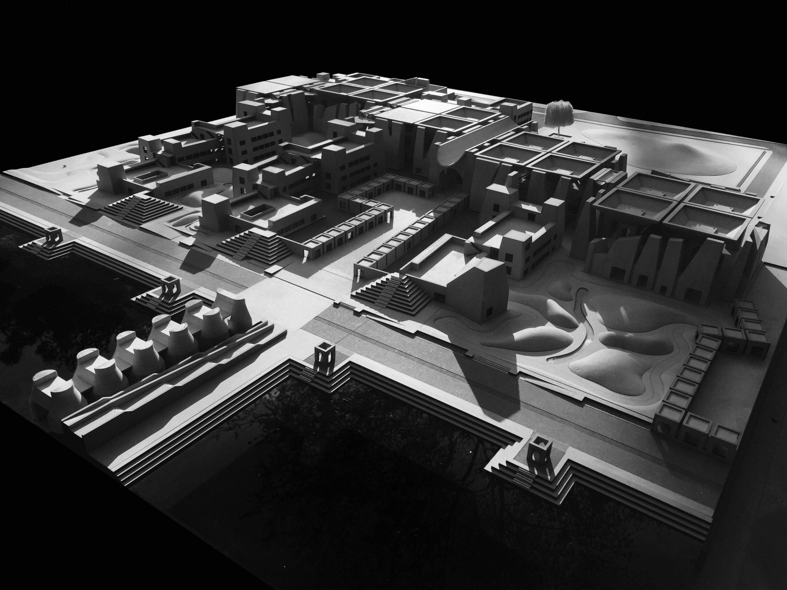
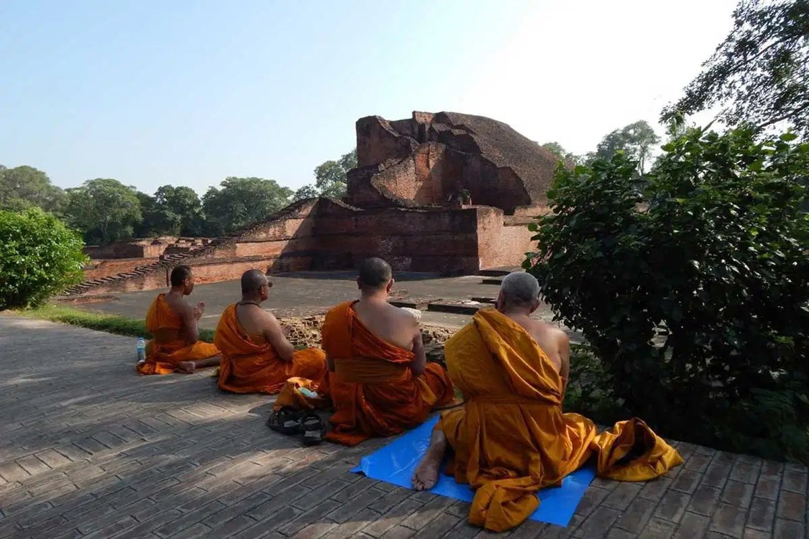

Top Attractions at Nalanda University
Ancient Ruins

The ruins of Nalanda University are a fascinating reminder of its grandeur. The excavation site offers a glimpse into the ancient buildings, temples, and monasteries that once housed thousands of scholars.
Architectural Brilliance
The architecture of Nalanda University is an exquisite blend of Indian, Tibetan, and Chinese styles. The remains of multi-story buildings and intricately designed temples stand as symbols of the intellectual and cultural achievements of ancient India.
Buddhist Influence
The university was a prominent center for the study of Buddhism and attracted scholars such as Xuanzang and Bodhidharma. Its influence on Buddhist philosophy and the spread of Buddhist teachings is evident in the site’s artifacts and inscriptions.